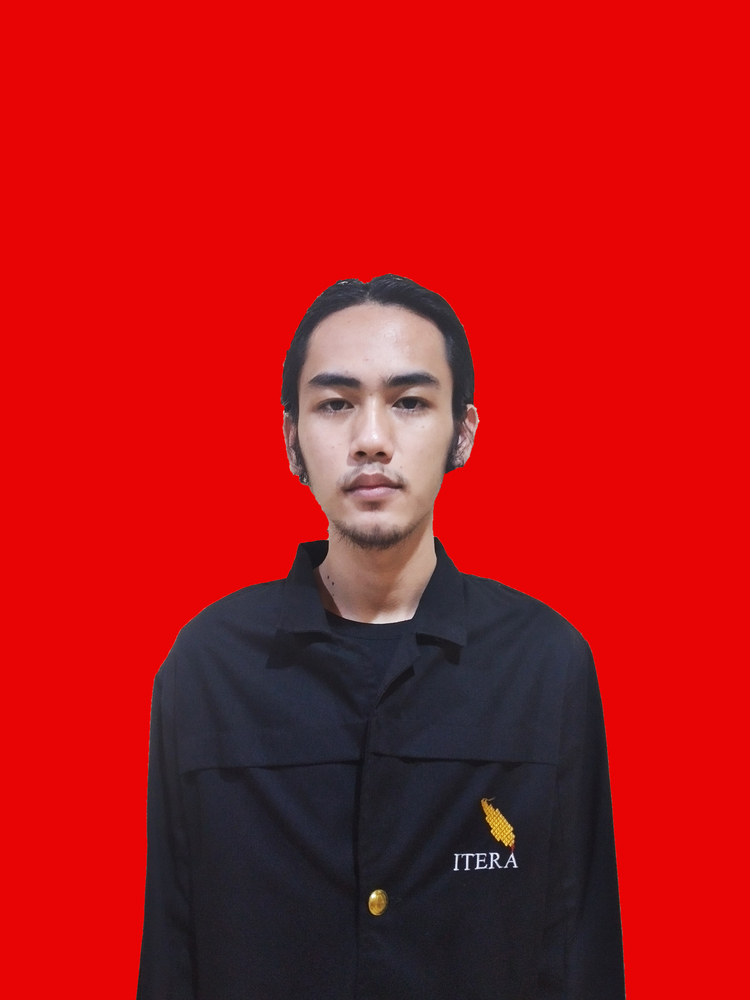

Tugas 1 Pratikum Pemrograman WEB RC
Selamat Datang Di WEB
Build by Fahri Setiawan
Biografi
Perkenalkan Nama Saya Fahri Setiawan seorang pria yang lahir dari Pasangan suami istri Sujarwo dan Barida pada 18 januari 2001 di kecamatan Baradatu , Kabupaten Waykanan , Provinsi Lampung.Saya memiki golongan darah O dengan tinggi badan 173 dan berat badan 50 Kg .Saya merupakan anak ke tiga dari empat bersaudara. Saya sangat bersyukur dilahirkan di tengah-tengah keluarga yang sangat menyayangi diri saya . Hobi saya adalah bermain game dan membaca terutama pada bidang teknologi. Riwayat Pendidikan saya dimulai dari taman kanak-kanak – SMP berada di daerah kelahiran Saya lalu berpindah kabupaten saat SMA yaitu di SMA N 1 Kotagajah, Lampung Tengah Dan sekarang saya sedang menempuh jenjang perguruan tinggi (S1) di Institut Teknologi Sumatera ,Lampung Selatan pada bidang teknik Informatika pada 2019 saya lampau. Alasan memilih Prodi ini berhubungan langsung dengan hobi saya yang suka dengan hal hal yang berbau teknologi.
Semasa balita menuju remaja saya merupakan pribadi yang dapat dibilang dewasa duluan melebihi umur saat itu , saya merasa teman sebaya saya tidak bisa diajak bergaul dengan leluasa karena memiliki pemikiran yang berbeda , mau tidak mau saya harus menyesuaikan diri di kalangan anak anak remaja saat itu ketika bermain bersama anak-anak seusia. Saya lebih suka bermain bersama orang dewasa yang umurnya 5 tahun lebih tua daripada saya karena lebih mudah dalam mereka memahami apa yang saya katakan dalam pembicaraan normal. Hal ini yang menyebkan saya dianggap anak pemalu dan pendiam dikalangan anak seusia saya . ada suatu kejadian ketika saya masih SD dimana anak anak seusia saya masih suka bermain dan berkelahi , menurut saya itu semua membuang buang waktu , saya lebih suka duduk di sudut taman sambil memperhentikan prilaku, sifat , dan karakteristik anak anak yang sedang berada di lingkup pengelihatan saya , mungkin orang lain dapat menyebut saya anak yang aneh karena bukan ikut bermain melainkan mengumpulkan data dari anak anak sekitar untuk keuntungan yang lebih lanjut.
Terlebih dari masa kecil saya yang aneh , saya juga merupakan orang yang sulit memperlihatkan apa yang saya rasakan kepada orang orang , saya lebih suka meyimpannya sendiri sambil mencari penyebab dan solusinya sendiri , daripada ketika diungkapkan itu dapat menggagu orang orang disekitar saya karena khawatir
Cukup tentang masa lalu pribadi saya, saat ini selama berkuliah Teknik Informatika di Institut Teknologi Sumatera, saya mendapatkan banyak pengalaman baru tentang teknologi terutama pada struktur algoritma dari suatu pemecahan masalah yang sehari hari saya temui dalam pelajaran maupun di masyarakat hal ini sangat menyenangkan memirkan rencana yang paling efektif dalam setiap langkahnya untuk memecahkan suatu masalah , Saya memiliki beberapa kendala dalam perkuliahan saya yang pertama adalah saya orangnya gampang mengantuk ketika pelajaran yang saya dapatkan terasa mudah dan tidak menantang mungkin ini adalah kebiasaan buruk saya yang perlu dirubah , Selama masa TPB di Intitut teknologi sumatera saya mendapatkan beberapa teman yang dapat dipercaya dan mereka semua anak anak baik yang cukup menghibur untuk menemani kehidupan kampus saya yang sedikit membosankan. Saya melewati semester 1 dan 2 TPB dengan cukup memuaskan dengan predikat Cumlaude, Untuk semester 3 kemarin saya cukup kewalahan karena Kelas diadakan secara online , saya selalu saja tertidur di jam perkuliahan malahan lebih parah dari pada saat TPB kelas offline, namun saya merasa bersalah karena hanya belajar pada saat menjelang ujian , ketika menjelang ujian saya sangat merepotkan teman teman saya karena tidak meiliki catatan selama perkuliahan , bahkan buku saja saya tidak punya , hanya berbekal HP dan pakaian kampus ketika kuliah .
Sebagai penutup saya memiliki Beberapa keluh kesah Pada saat pandemic covid-19 , dikarenakan banyak oknum –oknum yang merugikan masyarakat dengan memperkaya pribadi masing masing , jujur hal ini sangat mengaggu melihat barang barang kesehetan sengaja di naikkan harga pasarnya padahal semua itu adalah alat pendukung untuk secepatnya menangani pandemic yang menyerang hampir seluruh negara yang ada .
:strip_icc():format(webp)/klikdokter-media-buckets/medias/2302800/original/045285900_1547016776-4-Cara-Bikin-Kebiasaan-Minum-Kopi-Jadi-Lebih-Sehat-By-Ruslan-Semichev-Shutterstock.jpg)